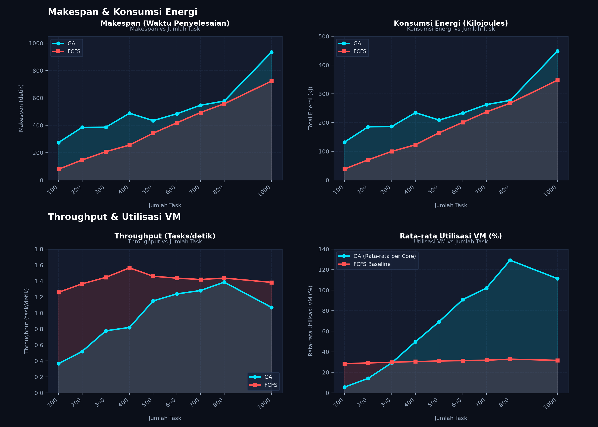
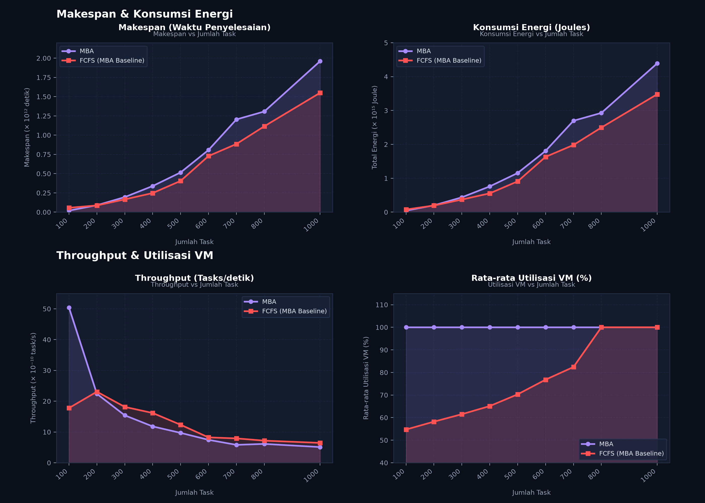

Keberhasilan Run Simulator CloudSim Plus
Seluruh entitas cloud (1 Datacenter, 4 Host fisik heterogen, 8 VM heterogen) berhasil diinisialisasi dan mengeksekusi 100 hingga 1000 task Google Cluster Trace dengan status 100% SUKSES.
Simulasi penjadwalan task komputasi awan berbasis CloudSim Plus dirancang untuk menyelesaikan masalah pemetaan multi-task ke multi-VM secara deterministik dan optimal menggunakan metaheuristik.
Spesifikasi & Keberhasilan Pembuat Host
Host fisik dibuat di dalam DatacenterSimple1 dengan arsitektur heterogen untuk
menguji kemampuan scheduler dalam menyeimbangkan beban multi-core.
Alokasi Core Fisik (Total 48 PE Fisik melayani 36 PE Virtual)
Katalog & Alokasi 8 Virtual Machine
Setiap VM dibuat oleh DatacenterBrokerSimple dan dialokasikan ke Host fisik
menggunakan kebijakan VmAllocationPolicyRoundRobin.
| VM ID | Host Fisik | Core (PE) | MIPS / PE | Total MIPS | RAM | Bandwidth | Status Alokasi |
|---|---|---|---|---|---|---|---|
| VM 0 | Host 0 / DC 1 | 2 PE | 1.000 | 2.000 MIPS | 4.096 MB | 1 Gbps | Allocated (Success) |
| VM 1 | Host 1 / DC 1 | 2 PE | 1.000 | 2.000 MIPS | 4.096 MB | 1 Gbps | Allocated (Success) |
| VM 2 | Host 2 / DC 1 | 4 PE | 1.500 | 6.000 MIPS | 8.192 MB | 1 Gbps | Allocated (Success) |
| VM 3 | Host 3 / DC 1 | 4 PE | 1.500 | 6.000 MIPS | 8.192 MB | 1 Gbps | Allocated (Success) |
| VM 4 | Host 0 / DC 1 | 4 PE | 2.000 | 8.000 MIPS | 8.192 MB | 1 Gbps | Allocated (Success) |
| VM 5 | Host 1 / DC 1 | 4 PE | 2.000 | 8.000 MIPS | 8.192 MB | 1 Gbps | Allocated (Success) |
| VM 6 | Host 2 / DC 1 | 8 PE | 2.500 | 20.000 MIPS | 16.384 MB | 1 Gbps | Allocated (Success) |
| VM 7 | Host 3 / DC 1 | 8 PE | 2.500 | 20.000 MIPS | 16.384 MB | 1 Gbps | Allocated (Success) |
Potongan Kode Pembuatan VM (Java CloudSim Plus)
Vm vm = new VmSimple(vmId, mips, pesNumber)
.setRam(ramMB)
.setBw(1000)
.setSize(10000)
.setCloudletScheduler(new CloudletSchedulerTimeShared());
vmList.add(vm);
broker.submitVmList(vmList);Bukti Konsol Eksekusi & Log Simulasi
Cuplikan output log aktual CloudSim Plus dari saat engine boot, alokasi VM ke Host, pengiriman cloudlet, hingga penyelesaian task ke VM.
Komponen Utama Bukti Eksekusi
results/metrics.txt dan results/scalability_runs.csv.
Dashboard Visual Skalabilitas (100–1000 Task)
Visualisasi hasil perbandingan Filled Area Line Chart dengan tema gelap elegan, mencakup Makespan, Konsumsi Energi, Throughput, dan Utilisasi VM.

